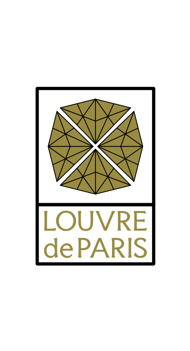
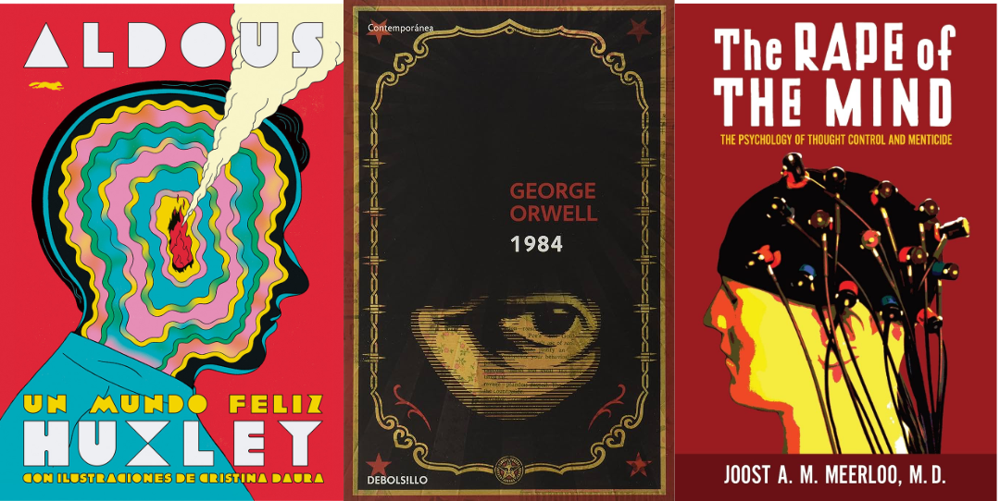
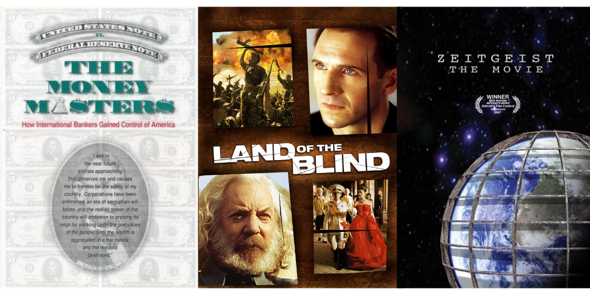

Exhibiciones
Bienvenidos a LOUVRE de PARIS, una exposición dedicada a explorar diferentes perspectivas sobre el mundo, la sociedad y la historia a través de la literatura, el cine y el pensamiento de diversos autores y ponentes.
Este espacio reúne obras, documentales y reflexiones que te invitan a cuestionar, analizar y descubrir nuevas formas de interpretar la realidad. Más que una exposición, es una oportunidad para conocer distintas ideas y ampliar nuestra visión del mundo. Abrir los ojos.

LOUVRE DE PARIS Un espacio para el conocimiento, la reflexión y el descubrimiento. Donde las ideas se encuentran con la historia.
Escanéa el código QR para tener más información.
LOUVRE DE PARIS Un espacio para el conocimiento, la reflexión y el descubrimiento. Donde las ideas se encuentran con la historia.
Escanéa el código QR para obtener más información.
Libros
En esta sección se presentan tres obras que, aunque son diferentes entre sí, tienen algo en común, abordan cuestiones relacionadas con la sociedad, el comportamiento humano y las estructuras de poder.
A través de la literatura podemos encontrar historias y análisis que nos hacen pensar sobre situaciones que, en algunos casos, no están tan alejadas de nuestra realidad. Los libros seleccionados ofrecen distintas maneras de abordar estos temas. Nos ayudan a pensar en una nueva persepectiva sobre nuestra sociedad en la que vivimos y como somos como personas.

De izquierda a Derecha. Un mundo Felix de Aldous Huxley, 198 de George Orwell y The Rape of the Mind de Joost A.M. Meerloo.
Películas
El cine también forma parte de esta exposición, ya que permite ver temas complejos de una manera diferente. En esta sección se reúnen algunas producciones relacionadas con el funcionamiento de la sociedad, la economía y la política.
Los títulos seleccionados presentan una temática y un enfoque particular, ofreciendo al espectador material para conocer, analizar y cuestionar diferentes aspectos del mundo actual y de nuestra sociedad

De izquierda a Derecha. The Money Masters, Land of Blind, Zeigeist The Movie.
Ponentes
Por último, la videoteca reúne una selección de conferencias, entrevistas y exposiciones de distintas personalidades que han dedicado parte de su trabajo al estudio y la divulgación de temas históricos, políticos, económicos y culturales.
Mediante sus intervenciones, los visitantes podrán acercarse a diferentes temas y conocer las ideas y planteamientos de cada ponente. Esta sección ofrece otra forma de conocer los asuntos que forman parte de la exposición. Nos ayudan a ver el mundo de una forma que no habíamos visto antes.
De izquierda a Derecha. De Arriba a Abajo. Antony Cyril Sutton, Marcelo Gullo, Juan Miguel Zunzunegui, Jiang Xueqin, Guillermo Mas Arellano